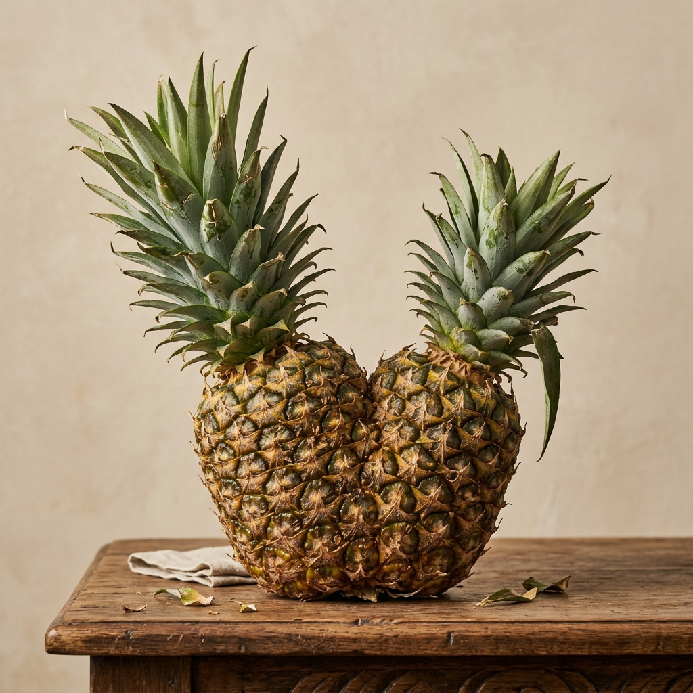
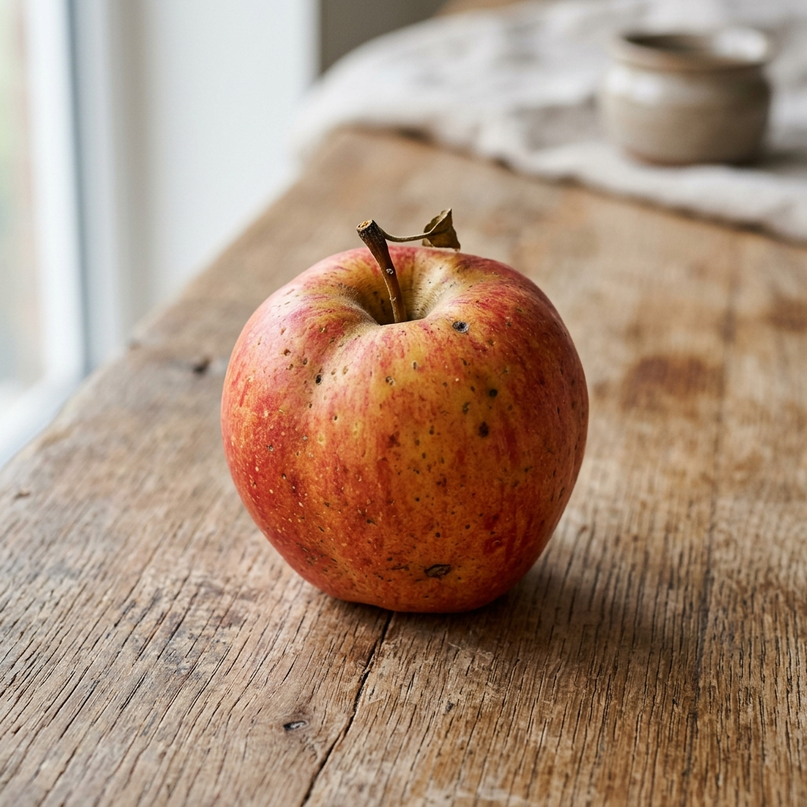
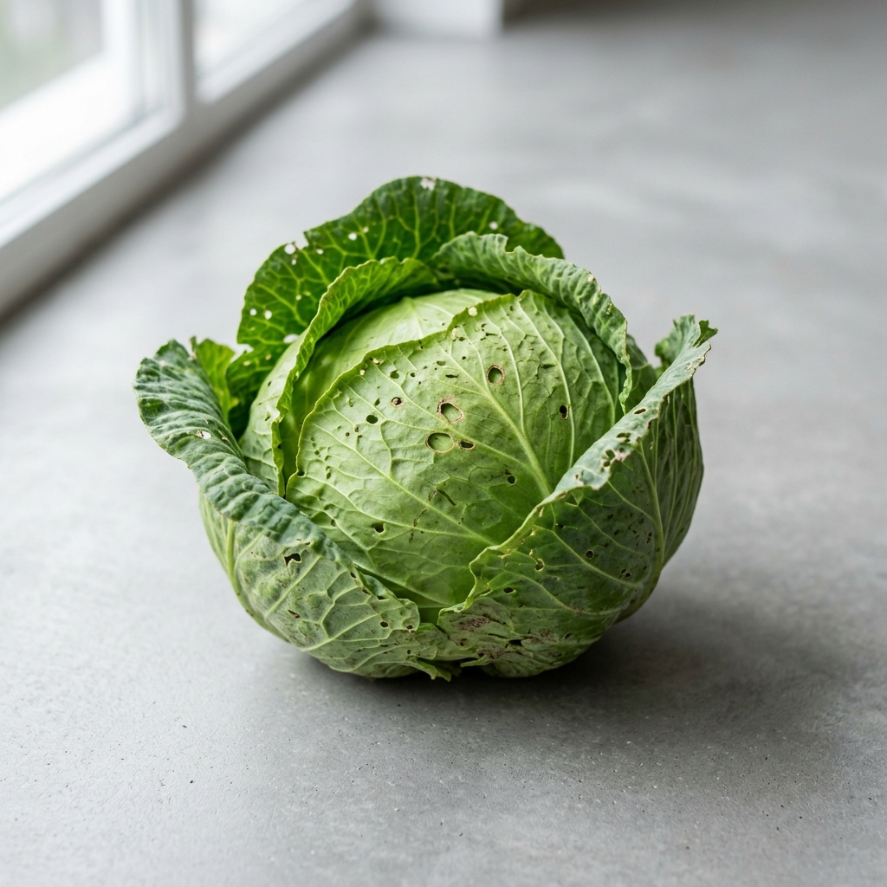
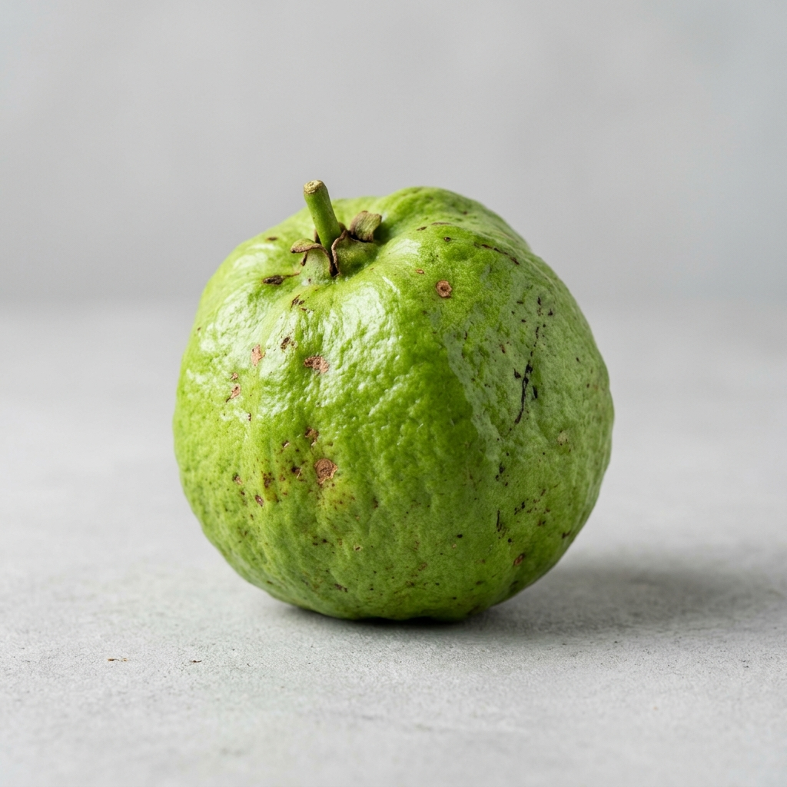
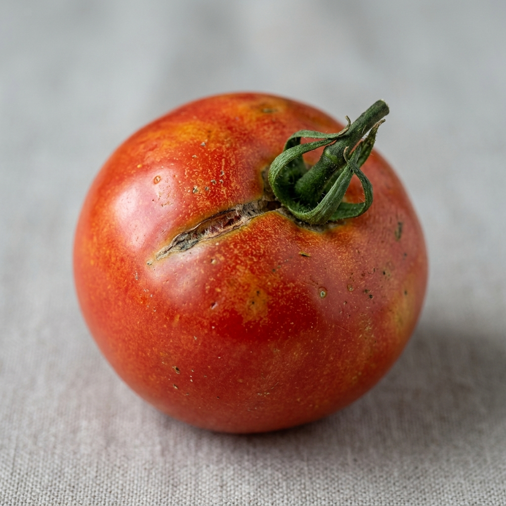

「美中不足，甜中有餘」手作果醬
與苗栗烘焙坊合作，將大湖小農當天採收、外形微凹的 A 級格外草莓，在黃金6小時內加入冰糖熬煮。留存最原始濃郁的草莓食味，每一口都是支持在地小農的味道。
在台灣，每年有高達 20%~25% 的優質農產品，僅因外表瑕疵、大小不符標準而在產地直接被淘汰。我們透過 AI 智慧分級與在地鄰近低碳媒合，為格外品賦予全新生命，協助農民增加收益，降低商家採購成本，攜手實現淨零永續。
雖然形狀奇特，但甜度與營養跟A級水果完全一樣！
手機拍照即可進行一秒雲端掃描，自動匡列表面病斑、畸形面積，並依甜度熟度大數據判定等級與合理定價。
打破大盤商壟斷，演算法優先推薦鄰近烘焙坊、加工業者與社福單位，讓供需兩端直接在地媒合，大幅縮短交易時間。
計算同縣市運輸之碳阻跡，精準量化每次媒合的減碳排成果，使微型交易成為可追溯的 ESG 碳足跡減量證明。
無償或低價導流安全食材至弱勢食堂，實踐食物正義；輔導食農青年回鄉結合醜果文創，活化偏鄉農業活力。
顛覆「線性經濟」的生產即廢棄模式，運用 AI 分級將廢物變資源，重新定義商業交易美學，打造零剩食循環網絡。
地圖演算法將物流限制在鄰近鄉鎮，減少長途運輸碳排放；防止剩食在農田堆放腐爛釋放甲烷，推動農業減碳。
點擊拍攝果實，或上傳照片進行 AI 辨識
點選農產範例立即體驗 AI 辨識：

格外鳳梨
格外蘋果
蟲咬高麗菜
風疤珍珠芭
裂紋牛番茄等待使用者輸入農作影像...
AI 自動辨識能有效減輕產地農民分類人力成本。上傳水果照片，系統將自動區分為 A級(烘焙)、B級(加工) 或 C級(綠肥料)。
在地小農格外品智慧對接，點選地圖上的「農民」標記，查看目前格外品庫存，點擊媒合以尋找最鄰近、食物里程最低的下游烘焙坊或社福中心。
店家發布格外品採購需求，農民可直接在產地「搶單」發貨。縮短供需對接，節省長途空車運能。